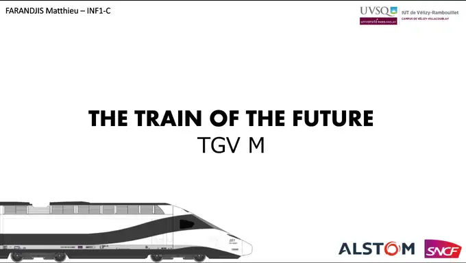

THE TRAIN OF THE FUTURE
TGV M

Terminé
Langue :

Présenté le :
08/12/2022
Outil
Microsoft PowerPoint
Equipe
Matthieu FARANDJIS
Plus sur le projet
Présentation

Dans le cadre de nos cours d'anglais, notre professeur nous a demandé de préparer un exposé sur une nouvelle innovation (ou invention) technologique.
Cela pouvait être une vraie innovation comme une innovation imaginaire, tant qu'elle est crédible et qu'on l'explique.
Initialement, je pensais parler des ordinateurs à ADN. Mais le thème était beaucoup trop complexe, et je jugeais qu'on avait peu de sources.
Je me suis souvenu alors d'un reportage de TF1 sur le prochain TGV de la SNCF : le TGV M.
J'ai trouvé que ce train futuriste, mais réaliste ferait un très bon sujet d'exposé.
Je me repose beaucoup sur le reportage de TF1, cependant, j'ai essayé d'apporter des précisions.
D'expliquer comment ça pourrait fonctionner. J'ai vulgarisé le fonctionnement d'un écran LCD dans cet exposé, par exemple.
Je suppose que certaines des technologies que je cite durant cet exposé ne seront pas tout de suite disponible.
Une chose est sûre, c'est que c'était un sujet passionnant. J'ai été impressionné de la façon dont SNCF arrive à s'adapter au monde de demain.
Note : 16/20 (de mémoire)
Microsoft PowerPoint
C'est ma toute première utilisation de l'outil de Microsoft !
Grâce à la licence Microsoft 365 fournie par l'UVSQ à ses étudiants,
je peux profiter des outils de Microsoft.
Habitué aux fonctionnalités de LibreOffice, j'ai été séduit par les capacités de ce logiciel.
Le fait qu'il suffit de lui mettre quelques éléments pour générer de magnifiques diapositives est tout à fait stupéfiant.
L'IUT de Vélizy est une composante de l'UVSQ.
Sources
• https://www.tf1info.fr/high-tech/video-sncf-voici-a-quoi-ressemblera-le-train-du-futur-ecologique-rapide-silencieux-2216717.html
• https://www.youtube.com/watch?v=hlrbR1JQ-VI&ab_channel=TF1INFO
• https://www.saint-gobain.com/fr/news/saint-gobain-sekurit-presente-ses-innovations-lors-du-consumer-electronic-show-2020
• https://www.saint-gobain.com/fr/magazine/stories/transports-en-commun-nouveau-lieu-de-vie
• https://www.francebleu.fr/infos/transports/les-chiffres-cles-du-tgv-qui-fete-ses-40-ans-1631633546
• https://www.alstom.com/fr/press-releases-news/2022/9/tgv-m-franchit-une-nouvelle-etape
• https://boisdron.com/2021/03/tgv-m-le-tgv-du-futur/
• https://www.tom.travel/2022/10/06/le-tgv-m-ouvre-t-il-la-voie-aux-trains-autonomes/
• https://www.sncf.com/fr/innovation-developpement/innovation-recherche/decouvrez-le-tgv-m